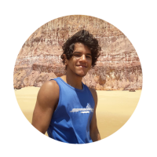

Quem sou eu?
Um pouco sobre mim
Sou o Paulo Toscano, tenho 20 anos , atualmente estou cursando Ciência da Computação na UERN, e estudando HTML, CSS e JavaScripit no curso do Gustavo Guanabara, pois pretendo ser desenvolvedor Web. Amo praticar esportes, aventuras pela natureza, e fazer novos amigos.
 Acompanhe-me no Instagram.
Acompanhe-me no Instagram.
-
 Veja meus projetos no GitHub.
Veja meus projetos no GitHub.